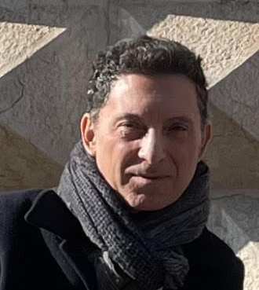

Professore ordinario di Scienza delle Costruzioni presso il Dipartimento di Architettura dell'Università di Ferrara. Presidente del Comitato degli Studenti del Dipartimento. Redattore associato del European Journal of Computational Mechanicsof. Ricercatore princiale del progetto 864154 MASCOT (Modular multilevel cost Analysis Software for COmposite smarT fuselage). Ricercatore principale di progetti internazionali nel campo dei Beni Culturali (Restauro della chiesa della Natività a Betlemme, Monitoraggio Smart dello stato di salute di beni culturali in Giappone). Numerosi periodi di ricerca/visita all'estero (Wessex Institute of Technology, University of Southampton, Queen Mary College London, Nagoya University, Imperial College London). Attività di revisione per numerose riviste di meccanica computazionale. Docente nel Master di "Miglioramento sismico, restauro e consolidamento del costruito storico e monumentale" e nel Master Internazionale "Restauro, Conservazione e Valorizzazione del Patrimonio Culturale" con Polis Tirana. 60 pubblicazioni in Scopus, 1000 citazioni, h-index 18, Maggio 2026. Ampia gamma di argomenti nell'ambito della meccanica strutturale, tra cui: danneggiamento continuo nei materiali fragili, ottimizzazione strutturale, analisi di affidabilità e identificazione degli impatti nei componenti compositi, analisi statica e dinamica non lineare delle strutture in muratura.